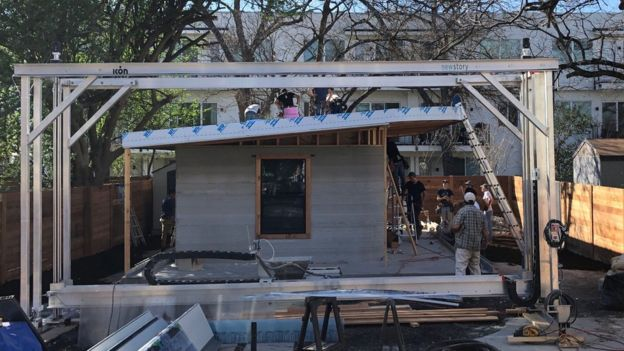

3D-printed homes turn sludge into shelter
In Texas, tucked behind a house for the wealthy, perhaps lies some hope for the significantly less so. More than a billion people in the world go to sleep each night without reliable shelter. But a pair of companies working on solving that believes their model of quickly 3D-printing a one-story house could not only provide merely a roof over the head, but a genuinely great place to live. I took a walk around a demonstration house while at the South by Southwest technology festival in Austin this week. It's a proof-of-concept built by Icon, a construction firm, and New Story, a non-profit that sets up housing in the developing world. The 650-square feet (60 sq m) dwelling required about $10,000 (£7,000) of concrete, and took 48 hours. Eventually the goal is to bring the cost down significantly by using a mixture of economies of scale - buy concrete in bulk - and improvements to the 3D-printing machine. The goal build time is between 12 and 24 hours. Image caption The printing frame, seen here in the foreground, passes over the building site on tracks Later this year, the project will head to El Salvador to build some test homes, with the view to begin work on a community of 100 houses in 2019. "If it does work it could literally change how shelter is created," said Brett Hagler, chief executive and co-founder of New Story. "It's irresponsible for us not to try it." Home-making hose Like small-scale 3D-printing, the system works by slowly adding material, layer-by-layer. In this case, that material is mortar, similar to concrete. The height and width of the house is constrained by size of an an enormous metal frame, which operates autonomously once given its instructions. "We can print up to 11ft tall with this machine," explained Alex Le Roux, chief executive of Icon. Image copyrightNEW STORY Image caption The concrete-like material comes out of a hose, and is built up layer-by-layer "It works on tracks like a train. You could build many, many homes back-to-back, or create a very long home." The robot follows blueprints created using typical computer-aided design (CAD) software. This means homeowners would have the ability to create their own designs on site, or pick one from a library of possible configurations. As I stepped inside, I found a small but capable structure. It certainly wasn't a shack, but a building that looked like it would withstand extreme weather, and wear and tear. At the time of my visit, the work on the interior had just begun. A small army of construction workers noisily worked on a wooden roof, windows and other touches. Over the next few hours the home would be made complete, furnished and fitted with plumbing and electricity. The concrete aesthetic was still visible, which, depending on your view, either feels cold and brutal, or stylishly minimalist. I'd be inclined to say the latter - this is a home that would appeal to those living in high-rent overpopulated cities all over the globe. 'Respect and dignity' But the focus for now is on those who need it most. The El Salvador project will see Icon and New Story aim to build 100 homes, financed by mostly Silicon Valley-based donors. Image copyrightNEW STORY Image caption The house is fitted with electricity and plumbing The houses will not be a hand-out, however. "The families agreed to a no-interest, no-profit mortgage that they will pay over about 10 years," explained Mr Hagler. That works out at about $30 a month. According to the country's economics ministry, the average monthly wage in rural El Salvador is around $360. "That money does not come back to us," he added. "It's kept in a community fund." The fund will go on to pay for more homes in future, or maintenance on existing structures. Mr Hagler said the mortgage model will foster "respect and dignity" within the community. 'Smarter way to find jobs' It may also have an impact on the jobs market for construction workers in the country, Mr Hagler conceded - but argued those concerns missed the bigger picture. Image caption Brett Hagler will take the concept to El Salvador later this year "What we've seen from our past families, is that the quicker you get families into safe shelter, the quicker they're actually able to get an income. Or get a microloan, and start a business. "By getting families into homes faster - that's actually a smarter way to find jobs than just having construction jobs." That said, Mr Hagler believed the machines will be operated by local construction workers, and it is hoped the lower cost of each unit would in turn mean more demand for more houses to be built. As for the trendy new pad in Austin, Mr Hagler suggested there's only one thing to do. "Put it on AirBnb."
MadMax